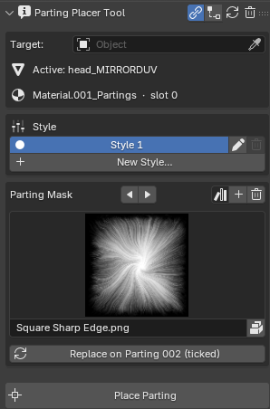

Parting Placer Guide¶
Applies to: Parting Placer V2.0.0 · Blender 4.4 · 5.2
Parting Placer puts scalp partings on a head mesh in Blender. You place each parting with the mouse, then bake the result to texture maps.
What It Does¶
Each parting is one Empty plus one shader node group. The parting follows the surface of the head, and the mesh itself is never deformed. How A Parting Is Built explains more.
Partings are a shader effect. You see them in Material Preview or Rendered shading. They do not show in Solid shading.
Where To Start¶
- First time using the add-on? Start with Your First Parting In 10 Minutes.
- Looking up one button or setting? Go to the Panel Reference, starting at Panel Header.
- Something looks wrong? Check Troubleshooting.
Where To Find The Panel¶
The panel lives in the 3D Viewport sidebar. Press N, then select the Parting Placer tab.

Known Limitations¶
- Partings on the generated half of a Mirror modifier cannot be baked directly. That half shares its UVs with the real half. See Work On A Head With A Mirror Modifier.
- Freeze Layer works up to 3 times per material.
- The transparent export uses this head's UV layout, so it only fits this head.
- Coverage lost in a version before v1.1.0 cannot be recovered. See the Changelog.
Support¶
Email help@ebonix.com and include:
- your Blender version
- the add-on version, from the i at the left of the panel title
- what you did, what you expected, and what happened
- a screenshot of the panel and of the problem
If the problem is in a baked map or an export, send the image itself.
If You're Stuck
- No partings showing? See I Cannot See Any Partings.
- Nothing happens when you place? See Place Parting Does Nothing.
Recommended next: Requirements And Compatibility